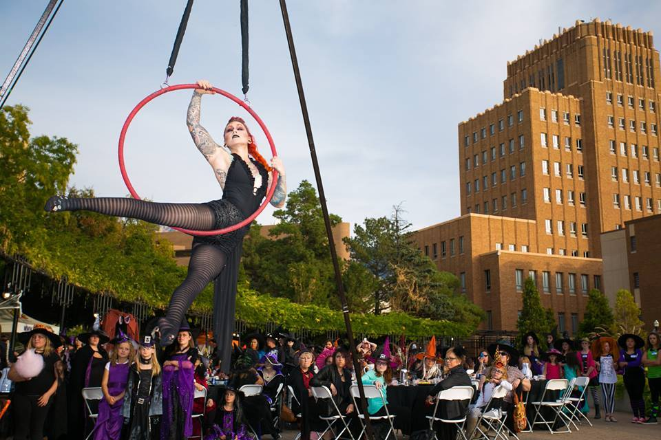

Witch Stock

Witches Tea 4 pm
*SOLD OUT*
Ticket is required for entry to the tea party. All other Witchstock events are free and open to the public. Gates open to the public at 6 pm.
Zombie Crawl 6 pm
Zombie round up will begin around 6:00 pm on the amphitheater plaza outside the gates and in the municipal gardens. Crawl will head west down Historic 25th Street and re-convene at the amphitheater around 7:00 pm.
Monster Bash 8 pm
Witches, zombies and all other characters are invited into the amphitheater for a dance party. Beer and wine will be available for purchase.
Ticket is required for witches tea party. All other events are free and open to the public.